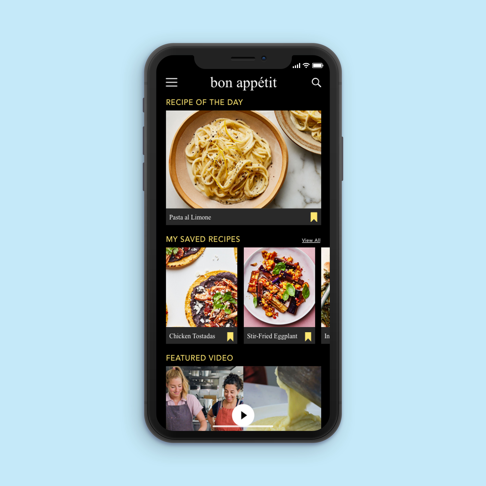

Bon Appétit Mobile App
Nov - Dec 2019
For my Digital Product Design course, I was tasked with designing an app that would address a problem of my choosing. As an avid Bon Appétit (BA) user, I designed an app that brings together BA's articles, recipes, and videos to create a positive user experience.
Problem Statement
Bon Appétit is a highly acclaimed publication encompassing all things food, including recipes, restaurant reviews, and even video production. There is no mobile--friendly application that consolidates all of the content from BA's website, social accounts, and podcasts. The lack of an application is a problem for users as they are unable save recipes, view videos, leave feedback on articles, or simply follow a recipe on the phone.
Design Process
I began my design process by conducting user research and developing multiple personas from these findings. Following the development of the personas, I plotted out the requirements needed to encompass all Bon Appétit has to offer. I then began producing low-fidelity wireframes and tested the user flows to find errors within the initial design. I turned the wireframes into a high-fidelity working prototype and conducted usability testing. My goal in designing this app was to be consistent with the branding of the publication while adding my own creative spin to the project.
Target Market
Primary users for the app are current users of bonappetit.com, subscribers to BA's magazine, and its social media followers. Secondary users include professional chefs looking for inspiration and foodies who want to watch cooking videos on their morning commute. The factor that unifies all audiences is the love of food.
Primary Persona
Riva Cooper
Age: 21, Profession: Student
Riva Cooper is a senior in college studying communication. She can frequently be found scrolling through her Instagram looking for inspiration for her next meal. Every month, Riva eagerly anticipates the arrival of her Bon Appétit subscription to find new recipes, and watches the corresponding how-to videos on its Youtube account. She wishes there were a way to seamlessly experience the Bon Appétit brand in one place including recipes, videos, and articles on the go.
Wireframes
Following my user research, I designed low-fidelity wireframes for potential features and pages I wanted to include in my app. Because Bon Appétit is an established publication, I knew I would be designing pages for Healthyish and Basically, two of BA's subsections, as well as video features, articles and recipes. I implemented a grocery list in order to allow users to easily check off items when food shopping and a save feature to easily access recipes and articles.
Prototype
I turned my wireframes into a digital prototype and made changes throughout the design process in order to create the most positive user experience possible. I modified my initial search feature based on results from my usability testing so that results are specific to the current page. For example, when the user searches from the saved recipe segment of the app, only recipes in this collection will be returned to the user. This limits information overload and helps the users find what they are looking for more easily.
Follow the link below for the working prototype of the app:
BA Prototype